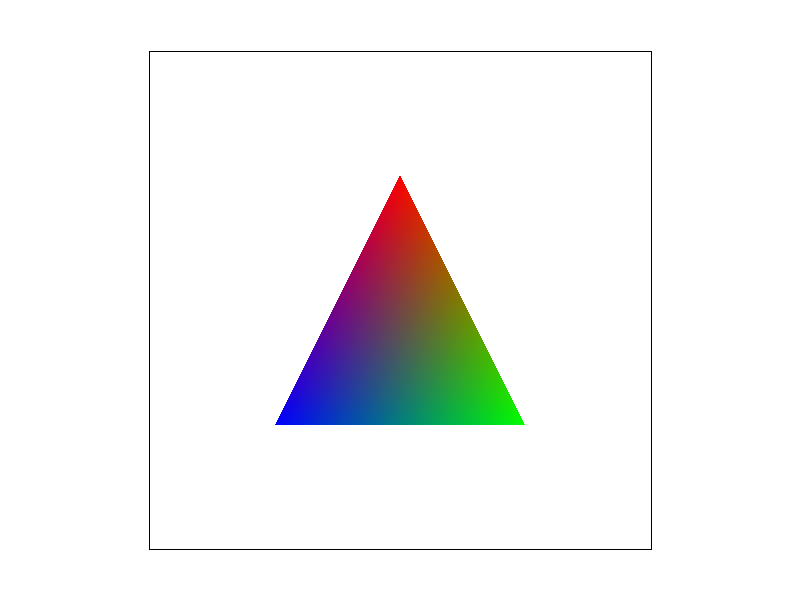

Overview
Having never built any sort of renderer from scratch, this assignment was incredibly illuminating. Many graphics options that I see in the settings of video games -- such as sampling rates, mipmaps, antialiasing -- had been completely abstracted in my mind where I had a general idea of what they did, but absolutely no idea how they worked. They were just magic to me! But with the work I've done on this project, the rabbit's now out of the hat: I have learned how low-level rendering and rasterization techniques work, and I know exactly how to implement them!
Section I: Rasterization
Part 1: Rasterizing single-color triangles
The rasterization of a triangle is a very simple algorithm. Each triangle has three vertices, which in turn creates three lines between those points. For each of those three lines, and each pixel in the triangle's bounding box, the rasterizer does a point- in-line test at the pixel location's center. If it passes all of those tests in either the clockwise or anticlockwise direction, the pixel is rendered. My algorithm is "no worse than one that checks each sample within the bounding box of the triangle" because, well, that's precisely what it does!'
|
|
Part 2: Antialiasing triangles
To make our triangles prettier, we're going to need to pull out a few tricks. Antialiasing is a powerful technique to reduce jaggies and the Moire Effect. Luckily, the implementation only required some small tweaks to our current alogirithm
For each pixel, rather than finding one color, we now take sample_rate samples at different sections of the pixel's location, and average those colors together. This required modification in two parts of the rendering pipeline:
> 1. Rather than just at the center of the pixel, we perform point-in-line tests at different sections of the pixel, the division of which deteremined by sample_rate.
> 2. The sample buffer needed to be resized to be able to hold the data for sample_rate colors per pixel. This makes its size width * height * sample_rate.
This color average makes it so there is a smooth gradient into the background color at the edge of triangles, reducing the jagginess and "pixel-y" look of our simple raster.
In the images below, notice how increasing the sampling rate reveals more detail of the very skinny triangle.
|
|
|
|
|
Part 3: Transforms
I used transformations to make the robot do a cheeky push-up with their inhuman upperbody strength. Look at how they suspend themself; an impressive feat.
Section II: Sampling
Part 4: Barycentric coordinates
Barycentric Coordinates are an incredibly helpful coordinate system for triangles, that describe a point within the triangle relative to the locations of its three vertices. This allows you to easily linearly interpolate between values at each of the vertices. Take this triangle for example, where each vertex is either red, green, or blue.
|

|
Using many of these triangles, you can even create incredibly complex shapes like this color wheel:

|
Part 5: "Pixel sampling" for texture mapping
Barycentric Coordinates come in especially handy when rendering from texture space to screen space. Instead of interpolating over color like before, you use the coordinate values
to determine a (u, v) coordinate with which to sample the color for your (x, y) coordinate. However, as (u, v) is often a precise decimal value, it can be difficult to determine which pixel
(x, y) to color. There are two main methods of determining this for pixel sampling: nearest-pixel and bilinear.
Nearest-neighbor pixel sampling just rounds the (u, v) coordinates to the nearest texel, and returns the color of that. Simple.
Bilinear pixel sampling interpolates over the values of the four closest texels, creating a much smoother result.
|
|
|
|
|
|
As you can see, the bilinear sampling algorithm results in a much smoother, albeit blurrier, result. This makes it significantly easier to recognize and read the little R next to the twisted logo.
Part 6: "Level sampling" with mipmaps for texture mapping
We can further improve on this result. Level sampling sources colors from different mipmap levels rather than the texture itself. To do this, we first have to see how far away in texture space (x + 1, y) and (x, y + 1) are.
Whatever the further distance is between the two determines how high our mipmap level will be. Each higher mipmap level is lower and detail and more performant. The result is a better-looking image that also uses less resources.
We run into a similar issue to before, however. The calculated mipmap level is more often than not a precise decimal value between two mipmap levels, and we can use our same trusty algorithms as before to solve this!
Nearest-neighbor texture sampling just rounds the mipmap level to the nearest level, and does pixel sampling entirely on that level. Once again: simple!
Bilinear pixel sampling interpolates over the values at the mipmap level above and below the value we calculated, once again creating a much smoother result.
Look at the results on one of my old art pieces:
|
|
|
|
|
|
As you can see, the addition of level sampling reduces the warping on the perfectly-circular pips of the die, creating a better-looking result with the only downside being a bit of overblurring.
We now have three antialiasing techniques, each with their own tradeoffs.
Supersampling: powerful, but very costly on performance.
Pixel-sampling: Much more performant compared to supersampling, but with imperfect antialiasing and some warping.
Texture-sampling: Even more performant, with strong anti-aliasing power, but with the issue of overblurring.
Section III: Art Competition
Part 7: Draw something interesting!

Three hundred eccentric shapes, Exploding in space. |